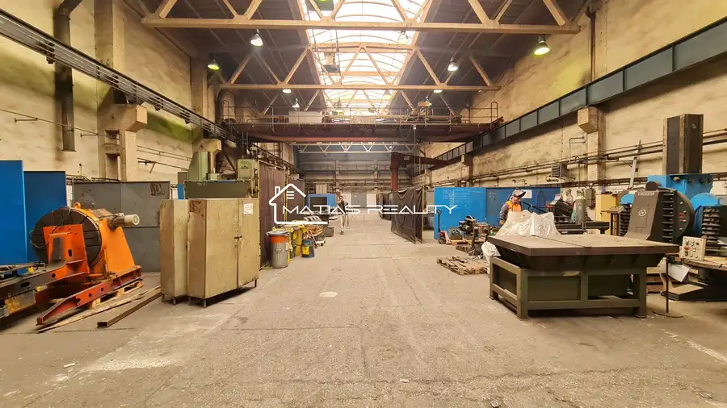
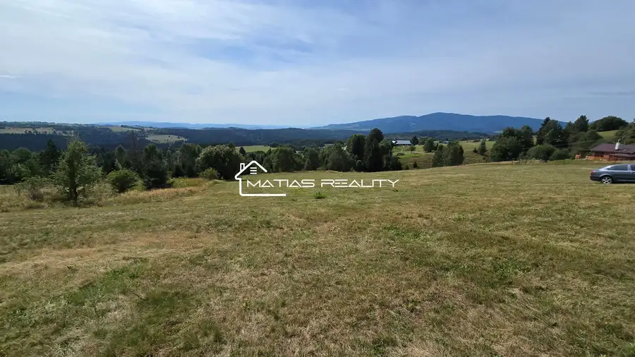
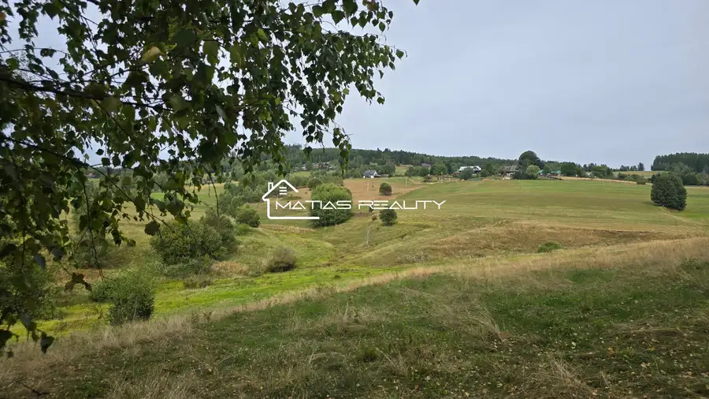

Priestranný rodinný dom, Hontianské Tesáre
Hontianske Tesáre
- Dispozícia6-izbový
- Plocha190 m²
- Stavpôvodný
- Vlastníctvoosobné
O nehnuteľnosti
Znížená cena! Ak hľadáte dom s veľkým potenciálom v pokojnej obci, no zároveň v blízkosti známeho kúpeľného mesta Dudince, táto ponuka vás určite zaujme.
Lokalita
Obec Hontianske Tesáre sa nachádza len pár minút od kúpeľného mesta Dudince – ideálne na oddych, wellness aj rekreačné aktivity.
Pokojná lokalita vhodná pre rodiny aj ľudí, ktorí hľadajú ticho a priestor.
Pozemok a stavba
Rovinatý pozemok s rozlohou 726 m².
Rodinný dom skolaudovaný v roku 2010 (výstavba 1995 – 2010).
Za domom dve hospodárske budovy (vhodné na zbúranie alebo nové využitie).
Inžinierske siete: voda, elektrina, studňa, vodovod
Plyn v dosahu na ulici
Septik spoločný so susedom
Dispozícia domu
Prízemie je v pôvodnom stave. Pozostáva z vstupná chodba, schodisko, kúpeľňa a samostatné WC, 2 menšie izby, kuchyňa prepojená s veľkou jedálňou
priestranná spálňa vhodná ako obývacia izba vďaka výmere (24 m²).
Poschodie (holodom):
Pozostáva z chodby samostatné WC, kúpeľňa, 2 menšie izby, 2 veľké spálne.
Potenciál a možnosti
Dom je ideálny na dokončenie podľa vlastných predstáv. Možnosť vybudovania moderného kúrenia (plyn dostupný). Priestranný pozemok vhodný aj na záhradu, relaxačnú zónu alebo rodinné aktivity.
Zaujala vás táto nehnuteľnosť?
Neváhajte ma kontaktovať a dohodnite si obhliadku:
☎
Parametre
| Rozloha pozemku | 726 m² |
|---|---|
| Zastavaná plocha | 100 m² |
| Úžitková plocha | 190 m² |
| Počet poschodí | 2 |
| Počet izieb | 6 |
| Vlastníctvo | osobné |
| Stav | pôvodný |
| Odvoz odpadu | áno |
| Voda | verejný vodovod |
| El. napätie | 230/400V |
| Plyn | áno |
| Kanalizácia | septik |
| Internet | lokálny poskytovateľ |
| Kúpeľňa | sprchovací kút |
| Vykurovanie | nie |
| Balkón | nie |
| Lódžia | nie |
| Terasa | nie |
| Pivnica | áno |
| Garáž | nie |
| Parkovanie | vlastné vyhradené |
| Inžinierske siete | áno |
| Postavené z | tehla |
| Zariadenie | čiastočne |
| Zateplený objekt | nie |
| Strecha | pôvodná |
| Krb | nie |
| Klimatizácia | nie |
| Energetický certifikát | nie |
| Predzáhradka | áno |
| Bezbariérový prístup | áno |
| Okná | drevené |
| Terén | rovina |
| Prístupová cesta | asfaltová cesta |
| Dátum zverejnenia | 19. 8. 2025 |
Kde to je
Mohlo by Vás zaujímať

Nebytové priestory5 Cena dohodouVýrobná hala Zvolen Zvolen 730 m² Ponúkame Vám na prenájom výrobne priestory spolu so žeriavom, kanceláriou, šatňou a sprchami v priemyselnej časti Zvolena. Priestor pozostáva z haly…
Pozemok8 54 740 €Rekreačný pozemok s výhľadom na Poľanu, 5474 m2 Detvianska Huta 5474 m² Ponúkame vám jedinečnú príležitosť na kúpu rozľahlého rekreačného pozemku na polosamote v obci Detvianska Huta, časť Bratkovica, s nádherným výhľadom…
Pozemok8 48 300 €Rozľahlý rekreaćný pozemok, Detvianska Huta - Bratkovica Detvianska Huta 6900 m² Ponúkame vám jedinečnú príležitosť na kúpu rozľahlého rekreačného pozemku na polosamote v obci Detvianska Huta, časť Bratkovica, s krásnymi výhľadmi…